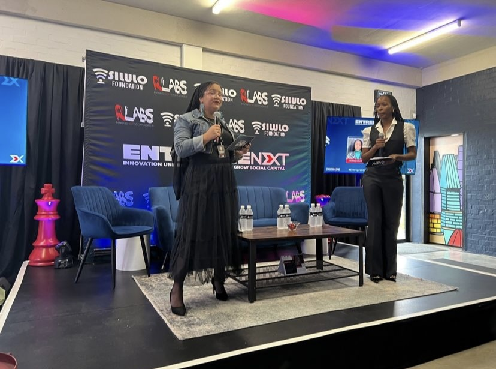

Programme direction · Event hosting
EntrepreNext partnership launch
Part of the event team and programme facilitation for the launch bringing together the Silulo Foundation and RLabs around entrepreneurial ecosystem development.
Project experience↗